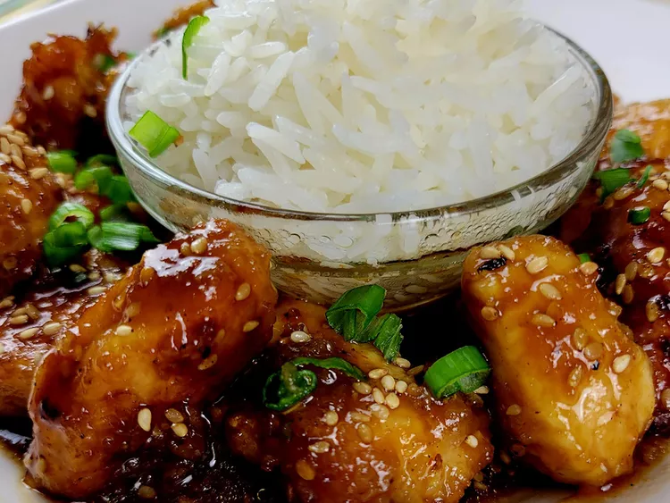

Sesame Chicken

Description
Recreate your favorite classic sesame chicken in the comfort of your own home. This is a must add for all stir-fry marinated chicken lovers.
Ingredients
- 2 teaspoons cornstarch
- 2 tablespoons rice wine
- 1 tablespoon lemon juice
- 1 tablespoon soy sauce
- 1 dash hot pepper sauce
- 1 tablespoon grated fresh ginger
- 1 clove crushed garlic
- 1 pound skinless, boneless chicken breast halves, cut into bite size pieces
- 2 tablespoons sesame seeds
- 1 tablespoon sesame oil
- 2 tablespoons vegetable oil
- 4 ounces fresh mushrooms, quartered
- 1 green bell pepper, sliced
- 4 green onions, sliced diagonally into 1/2 inch pieces
Steps
- To Make Marinade: In a nonporous dish or bowl blend cornstarch with wine or sherry; then stir in lemon juice, soy sauce, hot pepper sauce, ginger and garlic. Blend together and stir in chicken strips. Cover dish and refrigerate to marinate for 3 to 4 hours.
- In a wok or large skillet, place sesame seeds and dry-fry over medium heat, shaking the wok, until the seeds are a golden brown color. Remove seeds and set aside.
- To same wok or skillet add sesame oil and vegetable oil and heat slowly. Drain chicken, reserving marinade, and stir-fry in wok a few pieces at a time, until browned. Remove chicken with a slotted spoon and set aside.
- Add mushrooms and green bell pepper to same wok or skillet and stir-fry for 2 to 3 minutes. Add the scallions and stir-fry 1 minute more. Return chicken to wok, together with reserved marinade, and stir over medium high heat for another 2 to 3 minutes, or until the ingredients are evenly coated with the glaze. Sprinkle toasted sesame seeds on top and serve immediately.